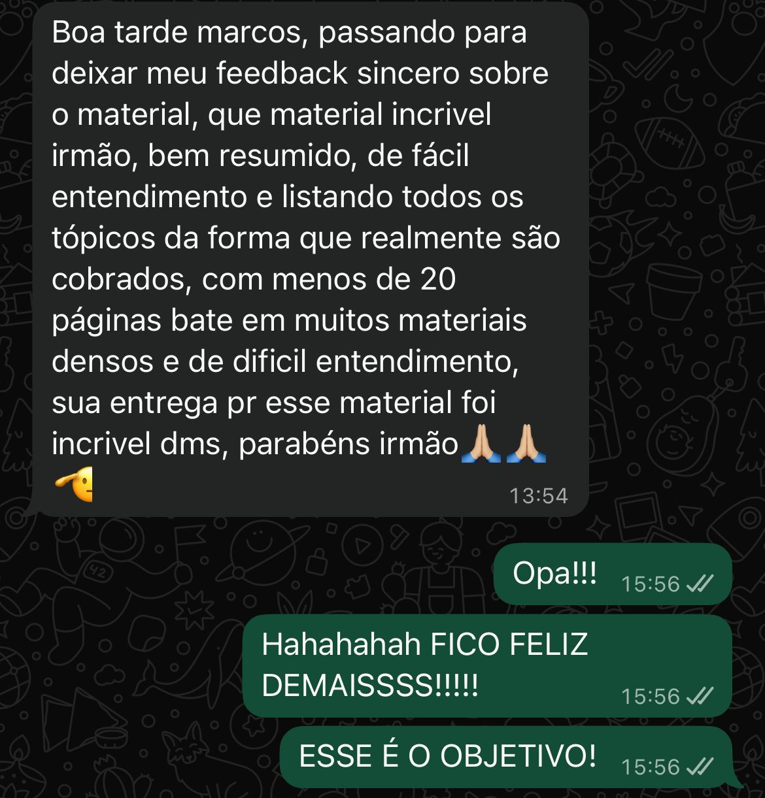
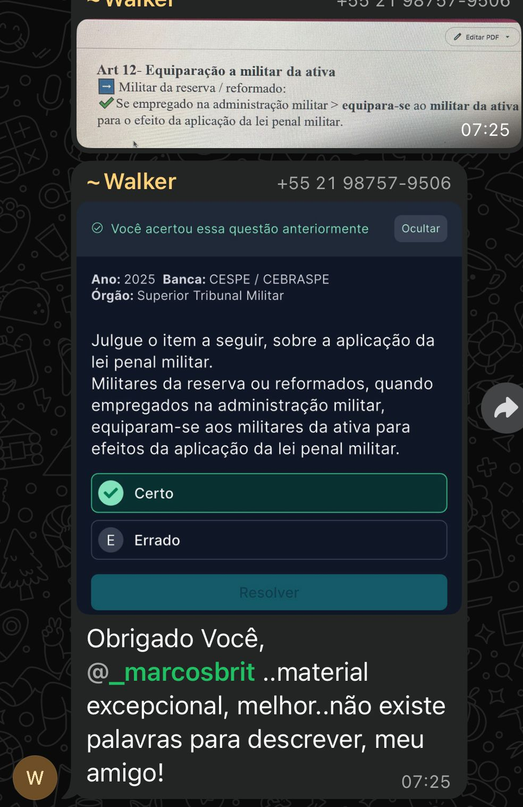
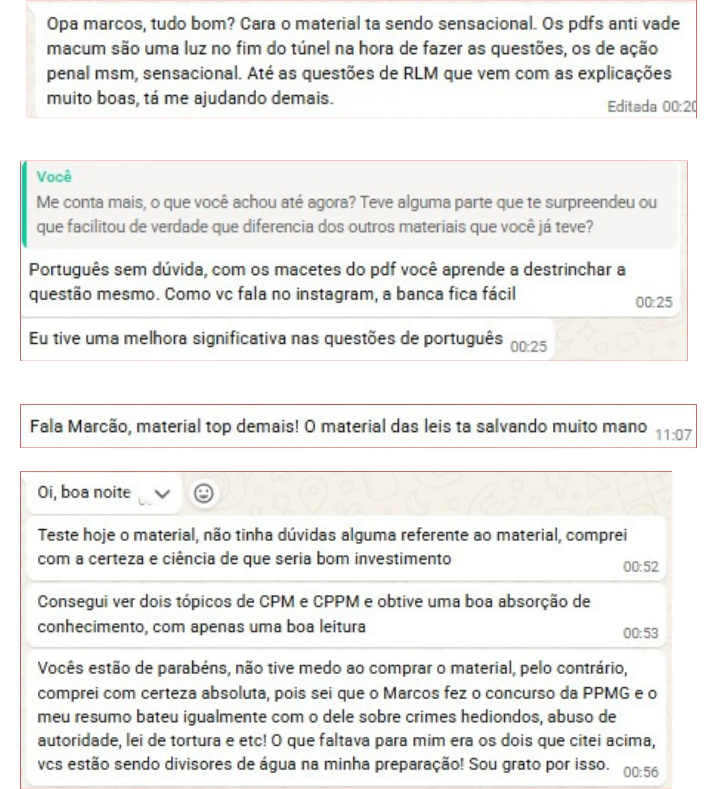
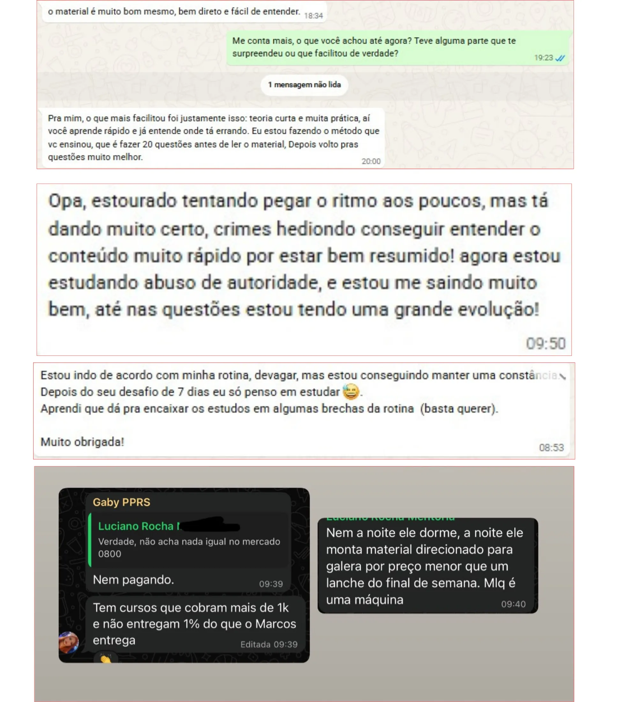

Você acabou de ver o motivo real pelo qual a reta final da PPRS está escorrendo pelos seus dedos. Agora deixa eu te mostrar exatamente o que muda a partir de hoje — e por que isso não tem nada a ver com esforço.
O problema real
Não é falta de esforço. É falta de direção.
Quanto mais você tenta encaixar tudo que falta no pouco tempo que resta, mais parece que o cronograma nunca fecha. Mesmo estudando todo santo dia, a sensação de despreparo não vai embora.
- Frustração de sentir que já devia estar mais avançado
- Dúvida se está estudando a coisa certa
- Sensação de estar ficando pra trás enquanto o dia da prova se aproxima
Você começa a achar que o problema é você. Que talvez não tenha capacidade. Pare de pensar isso imediatamente. O modelo tradicional de preparação foi feito pra funcionar em ritmo demorado, não focado no que realmente importa nessa reta final.
Reler PDF genérico de 50, 70, 90 páginas sem saber o que a banca realmente cobra é quase a mesma coisa que não estudar. E motivação sozinha não segura ninguém até o dia da prova sem um roteiro.
O que não funciona
Tudo que promete resolver a reta final e só rouba seu tempo.
Material genérico com conteúdo que você nunca vai terminar antes da prova. Feito pra durar, não pra aprovar você na data que já está marcada.
Quase sempre desatualizado e cheio de artigo revogado. Você estuda lei que nem existe mais e chega na prova com informação errada.
Bonito na planilha, abandonado em uma semana. Porque monta cronograma quem tem tempo sobrando — e reta final é exatamente a fase em que você não tem.
Decorar mais artigo, assistir mais videoaula, encher a cabeça de técnica de memorização isolada. Não importa quantas horas você empilhe: sem direção, o resultado não muda.
A virada
Sete reprovações depois, eu descobri o que realmente importava.
Há alguns anos eu tava exatamente onde você tá agora. Tentei material genérico de cursinho caro, resumo desatualizado de Telegram, cronograma colorido que eu abandonava depois de uma semana. Investi tempo, o pouco dinheiro que eu tinha e a energia que sobrava depois de um dia inteiro de trabalho cansativo.
Reprovei sete vezes. Até que percebi: o problema nunca foi falta de esforço da minha parte. Era falta de um roteiro certo e definido pra reta final.
Reta final não se estuda igual no início da preparação. Reta final se executa — dia a dia, com foco cirúrgico no que a banca realmente cobra.
O resultado depois disso foram duas aprovações em menos de 4 meses: uma na PPES e outra na PPMG. E foi assim que nasceu o Reta Final PPRS.
Suas dúvidas
Já ouço o que você está pensando.
É exatamente pra isso que o Reta Final PPRS existe. Ele não tenta te fazer estudar o edital inteiro do zero. Ele te dá o roteiro dia a dia do que estudar até a data da sua prova, com o pouco tempo que resta.
O roteiro foi construído pensando em gente comum: quem trabalha o dia inteiro e estuda à noite, quem já reprovou antes, quem não tem dinheiro pra cursinho caro de guru. São pessoas com desafios reais, tendo resultado real.
Esse é justamente o problema que o Reta Final PPRS resolve. Não é mais conteúdo pra você se perder. É um sistema que já filtrou o que cai e descartou o que não cai, com a sequência certa do que fazer em cada dia.
Porque reprovar não é sinal de incapacidade. É sinal de falta de roteiro. Foi assim comigo: sete reprovações até eu entender que faltava direção, não esforço. Depois disso, duas aprovações em menos de 4 meses.
O que você vai receber
Um roteiro completo. Sem enrolação. Sem teoria que não cai.
O Reta Final PPRS é um roteiro completo que vai te mostrar exatamente como:
- Saber o que estudar em cada um dos dias até a prova, sem montar cronograma nenhum
- Estudar só a lei seca que a banca realmente cobra, sem perder tempo com o que não cai
- Chegar no dia da prova com a sensação de que você fez o que precisava, não o que sobrou ou o que deu pra fazer
E tudo isso mesmo que você esteja começando a reta final atrasado, já tenha reprovado antes ou até ache que não vai dar tempo.
Dentro do Reta Final PPRS
O passo a passo de quais matérias estudar em cada dia até a prova e em qual tópico focar, pra você nunca mais abrir o material sem saber por onde começar.
Como ler e revisar pra fixar de verdade, sem reler a mesma página três vezes sem aprender nada.
Quantos simulados fazer, em qual dia fazer cada um, e quantas questões resolver por dia até a prova, pra treinar no ritmo que gera resultado, sem exagero e sem enrolação.
Provas
Gente comum, com desafios reais, tendo resultado real.
Quem antes se perdia entre PDF pirata desatualizado passou a estudar só a lei seca que a banca cobra de verdade. Quem achava que reta final era sinônimo de pânico passou a chegar no dia da prova com a cabeça organizada.




Bônus
O que vem junto, sem custo extra.
Uma aula ao vivo comigo, na última semana antes da prova, só sobre o que fazer nos últimos dias de reta final.
Acesso ao grupo exclusivo de quem comprou o Reta Final PPRS, pra tirar dúvida e trocar com quem tá na mesma fase que você.
Acesso ao grupo geral de candidatos da PPRS, pra acompanhar informações e se manter perto de quem também tá correndo atrás da mesma vaga.
O mesmo método que eu uso pra estudar e revisar, pra você parar de reler a mesma página três vezes sem fixar nada.
Investimento
Você não arrisca nada. A PPRS já cobra risco suficiente.
Se você fosse pagar por tudo isso separado, com qualquer um desses gurus famosos ou grandes plataformas, estaria investindo mais de R$400. Hoje, tudo isso está por uma fração disso.
Menos que uma pizza grande.
Se você abrir o material e sentir que não é pra você, manda um e-mail direto pra mim e eu devolvo cada centavo. Sem perguntas, sem burocracia, sem enrolação.
A PPRS não vai ficar esperando você se organizar. A prova tem data marcada, e essa condição é de reta final, por tempo limitado — quanto mais você esperar, menos dias sobram pra aplicar o roteiro.